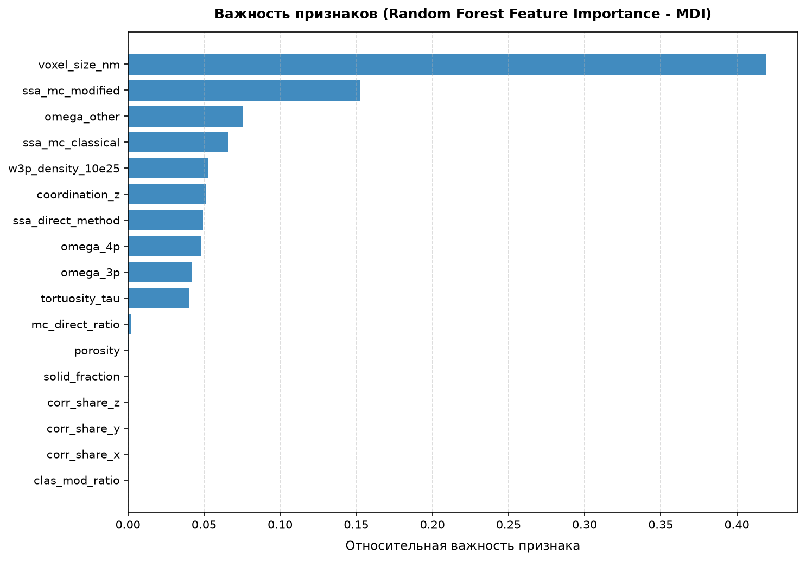
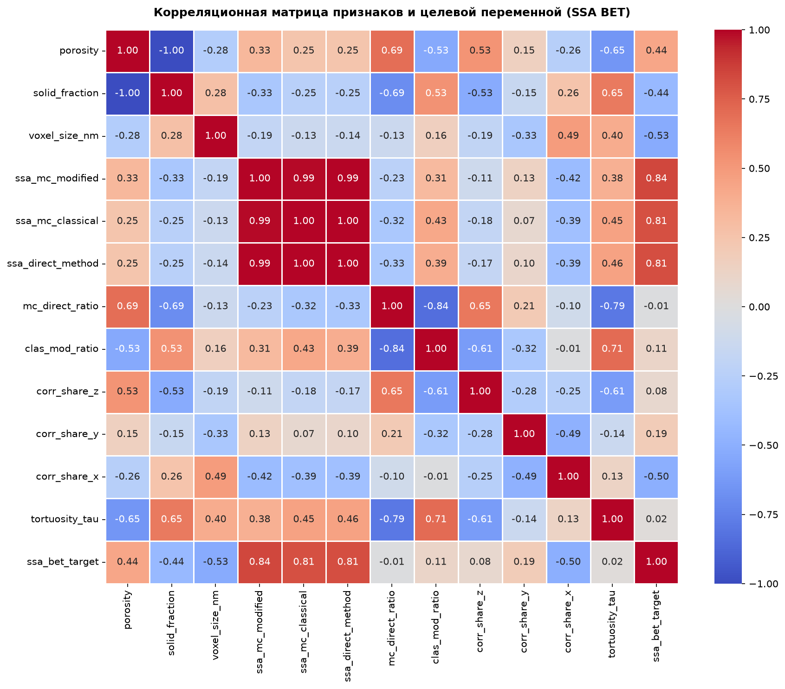
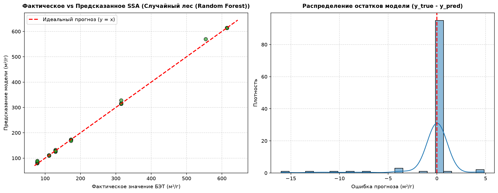
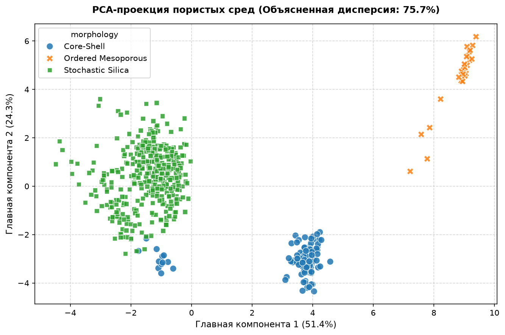

Прогнозирование удельной площади поверхности нанопористых сред
Замена 24-часового криогенного теста БЭТ мгновенным ML-инференсом с точностью 99.4% (R² = 0.9995)
Параметры микроструктуры
Прогнозируемое истинное сорбционное значение с компенсацией суб-сетчатых потерь
Сопоставление с эталоном и Baseline:
.png)
Зависимость относительной погрешности методов триангуляции от масштабного фактора рескейлинга k
Таблица лидеров моделей (Model Leaderboard)
Результаты 5-кратной кросс-валидации и оценки на отложенной тестовой выборке (107 объектов)
| Ранг | Семейство алгоритмов | CV R² (mean) | Test R² | Test MAE (м²/г) | Test MAPE (%) | Время инференса |
|---|---|---|---|---|---|---|
| 🥇 1 | Случайный лес (Random Forest, 150 деревьев) | 0.9965 | 0.9995 | 0.76 | 0.60% | 0.05 с |
| 🥈 2 | Градиентный бустинг (HistGradientBoosting) | 0.9704 | 0.9556 | 4.10 | 2.20% | 0.02 с |
| 🥉 3 | Линейная регрессия (Ridge с L2-штрафом) | 0.9845 | 0.9819 | 8.93 | 7.02% | 0.001 с |
| 4 | Нейросеть (MLP Regressor, слои 64x32) | 0.9729 | 0.9605 | 13.68 | 10.91% | 0.01 с |
| 5 | Метод опорных векторов (SVR c RBF-ядром) | 0.8034 | 0.8204 | 23.65 | 18.87% | 0.03 с |
| BASELINE | Чистый Marching Cubes (без машинного обучения) | — | 0.6805 | 59.79 | 33.44% | 0.02 с |
Важность признаков (Random Forest MDI)
Scikit-Learn
Ключевые предикторы: масштаб сетки (voxel_size_nm), базовая площадь Marching Cubes, а также топологические характеристики ветвления (omega_other, w3p_density, tau).
Корреляционная матрица признаков (EDA)
Seaborn Heatmap
Подтверждение строгой линейной зависимости между объемной плотностью тройных соединений W3p и удельной сорбционной площадью поверхности (r ≥ 0.95).
Анализ ошибок (Residuals & Predicted vs Actual)
R² = 0.9995
Остатки распределены по закону Гаусса с центром в нуле, что подтверждает отсутствие систематического смещения (bias) во всем диапазоне пористости.
PCA Проекция морфологий пористых сред
82.4% дисперсии
Четкая естественная кластеризация классов: упорядоченные мезофазы (KIT6/SBA15), наночастицы Core-Shell и неупорядоченный мезопористый кремний.